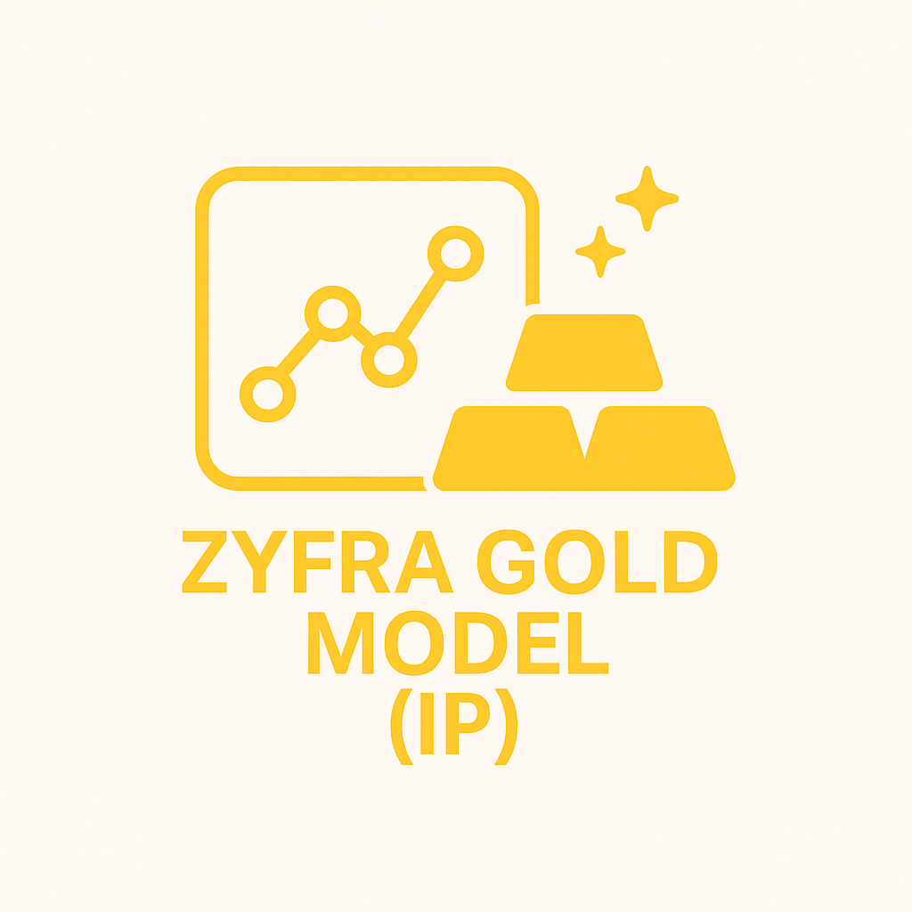
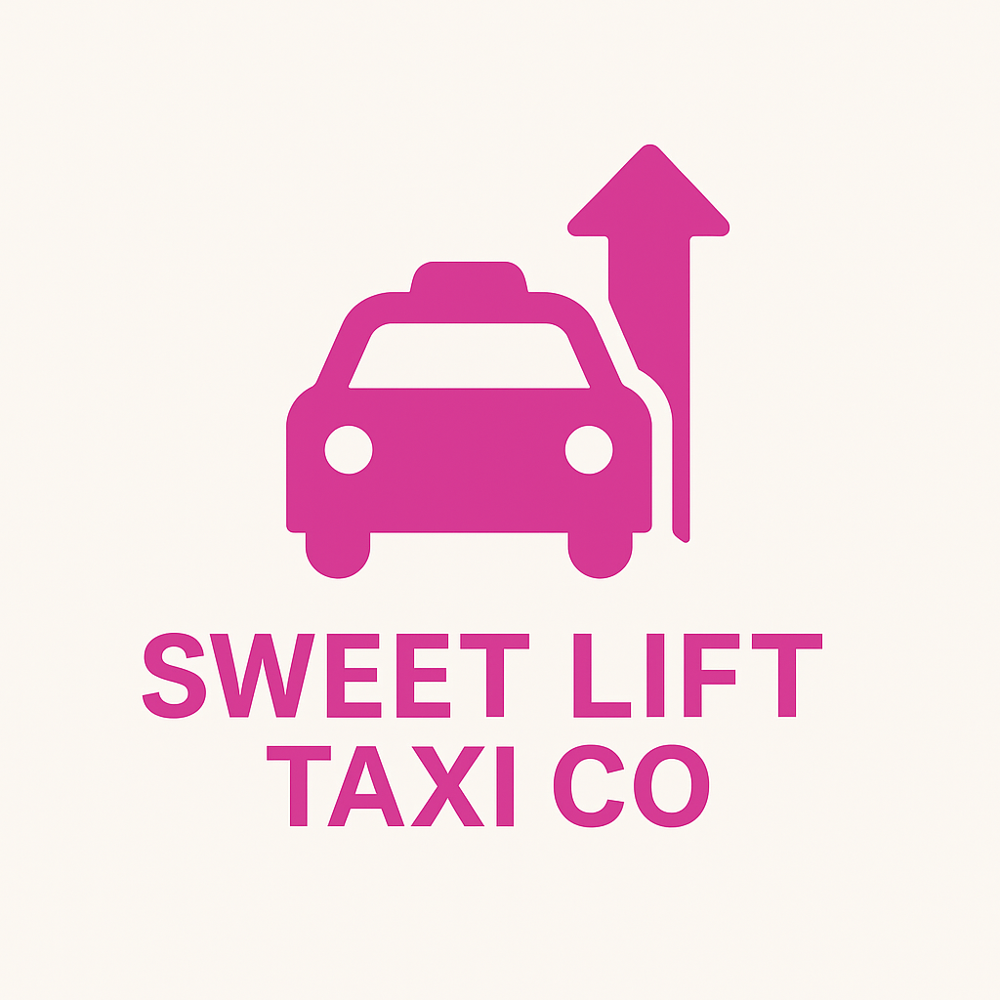

Our goal here was to help the telecom operator Interconnect forecast their churn of clients.
Using contract, personal, internet and phone data, we were able to develop a model that could
accurately determine when clients were about to churn which helped the company focus more
targeting marketing strategies and promotions towards those customers reducing overall churn
rate.
---------------------------------
MODULE | Final Project
Concepts
ML | OHE | Scaling | Pipelines | LR | Accuracy Score | AUC-ROC
Libs & Packs
pandas | numpy | seaborn | matplotlib | sklearn

In this project, our goal was to help create a machine learning model that would help predict the
amount of gold recovered from gold ore. A model was developed to optimize production of a gold
mine and eliminate unprofitable parameters. First, recovery values were validated to ensure
accuracy of the data provided by the company. After data preprocessing, concentrations of gold,
silver and lead were measured and compared. Models were built using RandomForest and XGBoost.
---------------------------------
MODULE | Integrated Project 2
Concepts
ML | MAE | KFolds | RF Model | XGB Model
Libs & Packs
pandas | numpy | seaborn | matplotlib | sklearn | XGBoost
For BetaBank, analysis was done into the behaviors of their clients that lead to contract
termination. Because of the data provided by the company, three models were trained and tested
on data that was upsampled, downsampled and balanced to find the best results. Final testing was
scored with the F1 Score metric and the AUC-ROC Score. We were able to train a model to help
anticipate a client’s intention to terminate their contract and lower churn rates for the
company overall.
---------------------------------
MODULE | Supervised Learning
Concepts
ML | LR Model | Recall & Precision | f1 Score | AUC-ROC | DecisionTree | RF Model
Libs & Packs
pandas | numpy | scipy.stats | matplotlib | sklearn
Goal for this project was to provide insight into ride share company customer preferences and the
impact of external factors on rides. In the analysis, we looked at the Top 10 Companies used by
customers in Chicago, and then the Top 10 Drop Off Locations. We compared data against days that
had inclement weather in the city and saw how that affected ride share activity. Hypothesis
testing was also done to determine the best recommendations to give regarding ride share
companies in Chicago.
---------------------------------
MODULE | SQL
Concepts
ML | Hypothesis Testing
Libs & Packs
pandas | matplotlib | IPython.display | scipy.stats: ttest_ind
In this project, we use MachineLearning to help Megaline analyze subscriber behavior and
recommend one of its newer plans: Smart or Ultra. Three models were used and tested for accuracy
to find the best model for the job.
---------------------------------
MODULE | Intro to ML
Concepts
ML | TrainTestSplit | Accuracy | DecisionTree | RF Model | LR Model
Libs & Packs
pandas | sklearn
For this project, a model was built to help the Rusty Bargain Car Co develop an app to attract
new customers. The app would allow potential customers to quickly find out the market value of
their car. The model was built using historical data such as technical specifications, trim
versions and car prices. LinearRegression, RandomForest and LightGBM models were used for this
project.
---------------------------------
MODULE | Numerical Methods
Concepts
ML | OHE | Pipelines | RF Model | LightGBM
Libs & Packs
pandas | numpy | seaborn | matplotlib | sklearn | LightGBM | time | warnings |
IPython.core.magic

The company Sweet Lift Taxi Co asked to build a model to predict the amount of taxi orders for
any given hour. Their goal was to attract more drivers during peak hours. rMSE metric was used
to evaluate these model’s predictions. Time Series methods such as trends and seasonality were
used to analyze the data and later train the models. Autoregression, Moving Average, ARMA and
AutoARIMA models were used with the data to find the best fit for the data provided.
---------------------------------
MODULE | Time Series
Concepts
ML | Seasonality | Time Series Analysis | MSE
Libs & Packs
pandas | numpy | matplotlib | sklearn | statsmodels: seasonal_decompose, AutoReg, ARIMA |
pmdARIMA